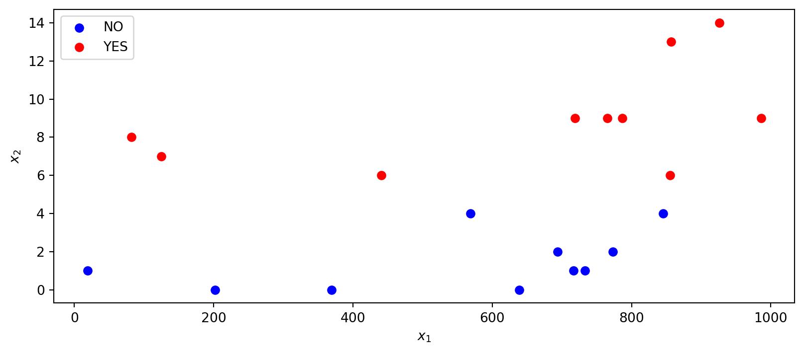
Logistic regression
Introduction to Artificial Intelligence and Machine Learning 4
Jiabao Xu
Jiabao.Xu@glasgow.ac.uk
Massimo Vassalli
massimo.vassalli@glasgow.ac.uk
From regression to classification
In Lecture 2b we built our first method, linear regression, one element at a time:
| Element | Linear regression |
|---|---|
| Model \(H\) | linear functions \(f_\theta(\mathbf{x}) = b + \mathbf{w}^T\mathbf{x}\) |
| Strategy \(L\) | mean squared error |
| Algorithm \(A\) | normal equations or gradient descent |
Today the target is a category instead of a number. We keep the linear combination \(b + \mathbf{w}^T\mathbf{x}\), but we change the model (it must return a probability) and the strategy (the MSE is no longer a good loss). The result is logistic regression, the second model of CW1. We close with a complete worked example on a real clinical dataset.
The map of the course
The order of weeks 4 and 5 has changed since the map shown in Lecture 2a: all the concepts needed for CW1 are now covered by the end of week 4, and regularisation moves to week 5.
| Step of the ML process | What we do | Lectures |
|---|---|---|
| Problem understanding | frame the problem as an ML task, choose the target | 2a, all coursework |
| Data understanding | explore, visualise, find structure | 2a, 5b (PCA), 7b (clustering) |
| Data preparation | clean, impute, encode, scale, transform, select features | 2a, 3b, 4b, 5a, 5b |
| Modelling | choose and train models: the \((H, L, A)\) of each method | 2b, 3a, 5a, 6a, 6b, 7a, 7b, ANN (weeks 8-10) |
| Evaluation | metrics, validation strategies, hyperparameter tuning | 4a, 4b |
| Deployment | communicate results and their limits | coursework reports and presentation |
| Week 3 | Week 4 | Week 5 |
|---|---|---|
| 3a Logistic regression | 4a Evaluation metrics | 5a Overfitting and regularisation |
| 3b Pre-processing and pipelines | 4b Validation and model selection | 5b Dimensionality reduction and PCA |
Note
Lectures 2a and 2b refer to the previous order: metrics (then 4b) are now in 4a, validation and tuning (then 5a) in 4b, regularisation (then 4a) in 5a. Deadlines are on Moodle.
Classification
Classification is the process of training a classifier on labelled examples, where each input belongs to one of a finite number of categories (classes). The goal is to find a decision boundary that separates the classes and can be used to classify new, unseen data.
Classification is a supervised learning task, like regression, but its output variable is discrete rather than continuous.
As for all methods, the model we choose depends on the data, and selecting it is a key step of the process.

Important
This lecture is based on content from the books Principles of Machine Learning and Machine Learning for Engineers
Classification appears in nearly every application domain where the goal is to assign a label or predict a category from data.
Biomedical and healthcare
- Cancer diagnosis from imaging data
- Detection of arrhythmias from ECG signals
- Predicting disease outcome (prognosis)
- Automated triage or diagnostic decision support
Information technology
- Spam vs. non-spam emails (text classification)
- Malware detection from software behaviour patterns
- Sentiment analysis of online reviews
Computer vision
- Object recognition (cat vs. dog, pedestrian vs. car)
- Facial expression classification (happy, sad, neutral)
Speech and natural language
- Speech emotion recognition
- Language identification
- Intent classification in chatbots
Note
In all these cases, the model learns from labelled data to predict a discrete outcome, often with a probabilistic confidence.
Binary classification
The simplest classification task, binary classification, answers an operational question with either yes or no (1 or 0).
- is the email spam?
- is the bank transaction fraudulent?
- is the tumour malignant?
Each sample is described by a feature vector \(\mathbf{x}_i \in \mathbb{R}^d\) and a label \(y_i \in \{0, 1\}\). In the simplest form, a single feature \(x\) correlates with the outcome. By convention, the class we want to detect (spam, fraud, malignant) is the positive class, \(y = 1\).
Classification pipeline
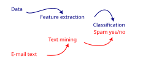
A machine learning pipeline always starts from data, pre-processes and prepares them (Lecture 3b), and then feeds them to the actual learning method.
Spam analysis
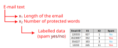
For the spam example, we can extract quantitative representations of the text of each email using either features of the text (for example its length) or external reference databases (for example a set of words often found in spam emails).
From data to decisions
Each point is a sample with two features, coloured by its class. To turn data into a classification decision we need a decision boundary, a line (or surface) that separates the two regions.
Decision boundary
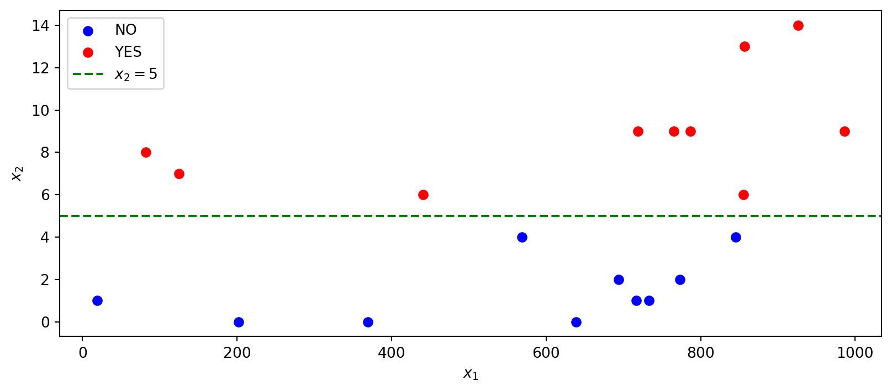
In this simple example the decision boundary is the line \(x_2 = 5\), which also tells us that \(x_2\) alone is enough to make a good prediction: \(x_1\) carries no information about the class.
A hard decision
Take a single feature \(x\) (e.g. the number of suspicious words in an email) and a binary target. We plot each sample at height \(y=0\) or \(y=1\), coloured by class.
The simplest classifier is a threshold on \(x\): predict spam if \(x > 5\). Its output is a step function, jumping from 0 to 1 at the decision boundary \(x^* = 5\).
This does not work well as a model to be learned:
- it gives no measure of confidence: a sample at \(x = 4.9\) and one at \(x = 0\) get the same answer, although the first is almost on the boundary and the second is clearly not spam. The samples near the boundary are exactly the ones we need to evaluate carefully.
- it cannot be differentiated: its slope is zero everywhere except at the jump, where it is not defined. Gradient descent (2b) would get no signal to move the boundary.
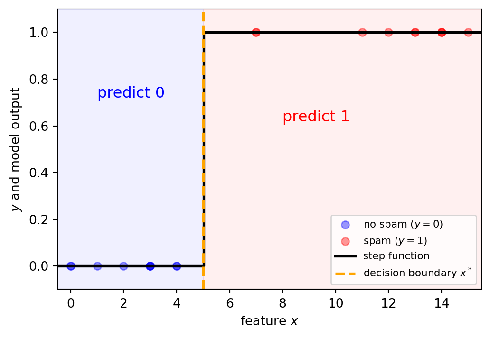
Probability and decision boundary
The training labels are always 0 (no spam) or 1 (spam). But a model does not need to answer only 0 or 1: it can return a probability \(p(x)\) that a sample with feature \(x\) belongs to the positive class. A smooth \(p(x)\) is close to 0 far on the left, close to 1 far on the right, uncertain near the boundary, and it has a gradient everywhere.
To take a decision we compare \(p(x)\) with a threshold, usually 0.5 (grey line). The decision boundary is not that line: it lives in the feature space, at the value \(x^*\) where \(p(x^*) = 0.5\) (orange line). Samples on its left are predicted as 0, on its right as 1.
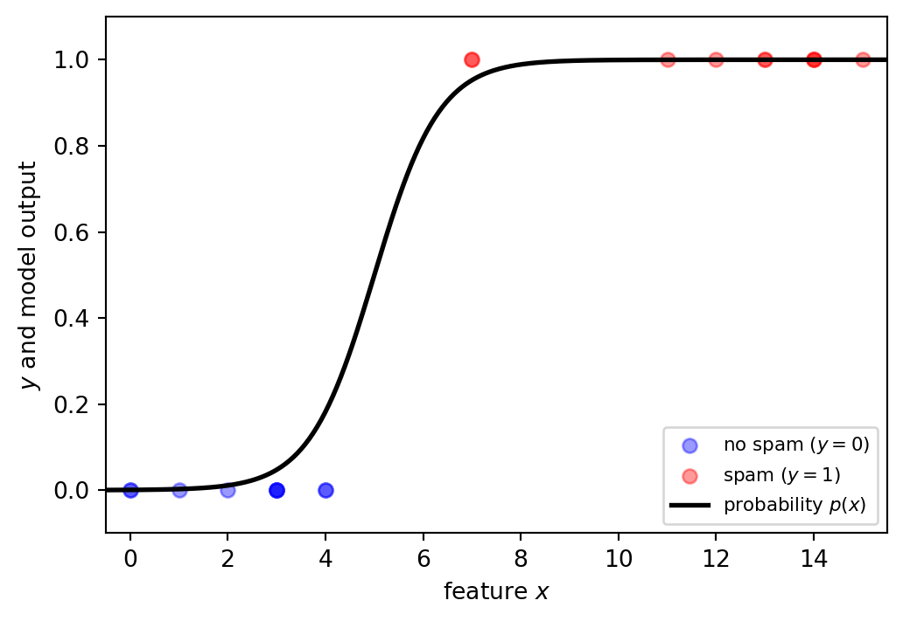
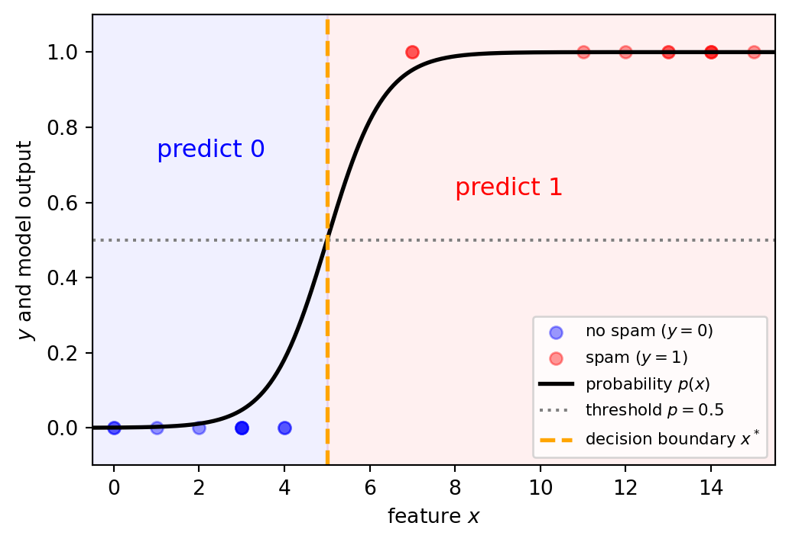
Note
Which function to use for \(p(x)\) is the choice of the model \(H\). The next slides look for it.
Linear regression + decision boundary
So the question is: what function should describe the probability \(p(x)\)? A first idea: fit a linear regression to the 0/1 labels, read its output as a probability, and put the decision boundary where the line crosses \(p=0.5\).
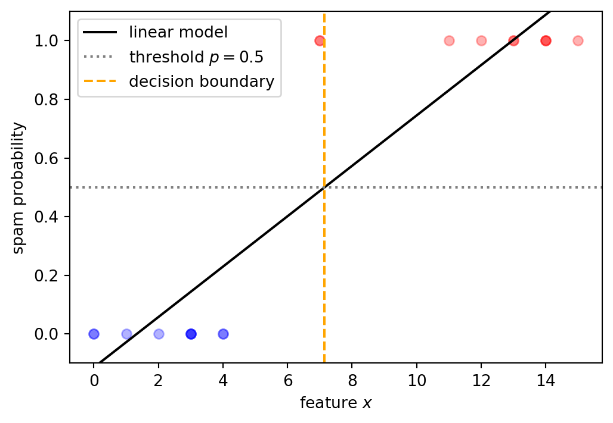
Note
The decision boundary is where the model “changes its mind”. Points close to the boundary are hard to classify and reflect the uncertainty of the model.
Linear regression + decision boundary
So the question is: what function should describe the probability \(p(x)\)? A first idea: fit a linear regression to the 0/1 labels, read its output as a probability, and put the decision boundary where the line crosses \(p=0.5\).
But the output of a line is not a probability: it goes below 0 and above 1. Worse, points that are easy to classify, far from the boundary, pull the line and move the boundary: here some positive samples end up on the wrong side, although the two classes are perfectly separated.
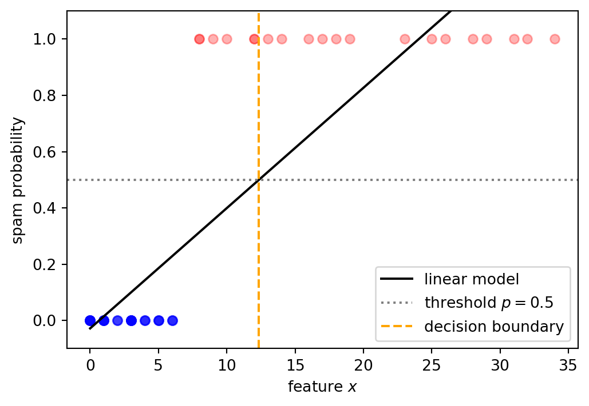
Warning
We need a model whose output stays between 0 and 1 and saturates for samples far from the boundary, so that they stop influencing it.
The model
We start from the linear function of 2b, which we now call the score: \[ z = wx + b, \qquad z \in (-\infty, +\infty) \] and pass it through the sigmoid (logistic) function, which maps any real number to \((0, 1)\): \[ p(x) = \sigma(z) = \frac{1}{1 + e^{-z}} \]
- \(z = 0\) gives \(p = 0.5\): the decision boundary is at \(wx + b = 0\), i.e. \(x^* = -b/w\)
- \(z \to +\infty\) gives \(p \to 1\), \(z \to -\infty\) gives \(p \to 0\)
- \(w\) sets how steep the transition is, \(b\) where it happens
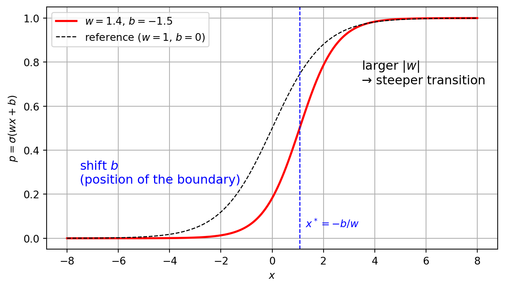
Odds and log-odds
What does the score \(z\) mean in terms of probability? Invert the sigmoid:
\[ p = \frac{1}{1+e^{-z}} \;\;\Rightarrow\;\; e^{-z} = \frac{1-p}{p} \;\;\Rightarrow\;\; z = \log\frac{p}{1-p} \]
The ratio \(\frac{p}{1-p}\) is the odds of the positive class, as in betting: \(p = 0.8\) means odds of \(0.8/0.2 = 4\), “4 to 1”. Its logarithm is the log-odds or logit. So the score is the log-odds: \[ z = \log\frac{p}{1-p} = wx + b \]
Logistic regression is a linear model of the log-odds: the score \(z\) is a continuous variable, linear in \(x\) exactly as in linear regression, and the sigmoid maps it back to a probability.
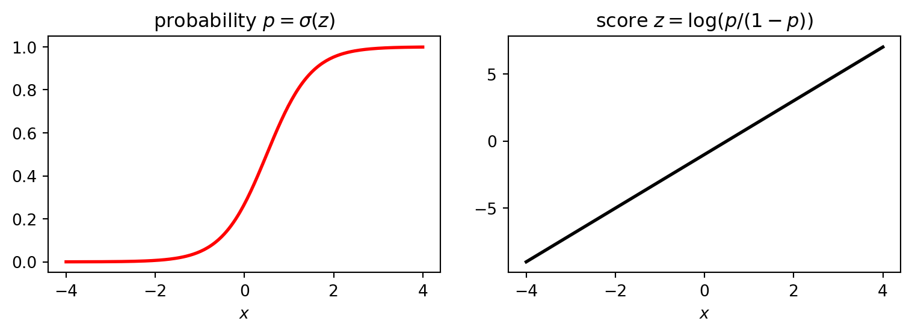
Multivariate logistic regression
With \(d\) features, the score \(z_i = b + \mathbf{w}^T\mathbf{x}_i\) is the same linear combination as in multivariate linear regression (2b):
\[ \hat p_i = \sigma(b + \mathbf{w}^T\mathbf{x}_i), \qquad \hat y_i = \begin{cases} 1 & \text{if } \hat p_i \geq 0.5 \\ 0 & \text{otherwise} \end{cases} \]
The decision boundary \(b + \mathbf{w}^T\mathbf{x} = 0\) is a hyperplane: a line in 2D, a plane in 3D. Logistic regression is a linear classifier. The weight vector \(\mathbf{w}\) is perpendicular to the boundary and points towards the positive class; the probability changes only along \(\mathbf{w}\).
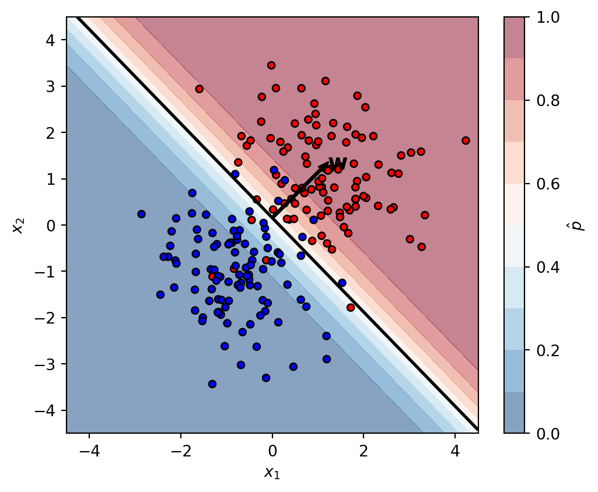
Reading the weights
In linear regression (2b), \(\hat y = b + w x\): if \(x\) increases by one unit, \(\hat y\) changes by \(w\). The weight is a slope, in units of \(y\) per unit of \(x\).
In logistic regression the same holds for the score: one unit more of \(x_j\) (all other features fixed) adds \(w_j\) to \(z\), the log-odds. Since the odds are \(e^{z}\), adding \(w_j\) to \(z\) multiplies the odds by \(e^{w_j}\), the odds ratio: \[ \frac{\text{odds}(x_j + 1)}{\text{odds}(x_j)} = \frac{e^{z + w_j}}{e^{z}} = e^{w_j} \] \(w_j = 0.7\) doubles the odds (\(e^{0.7} \approx 2\)), \(w_j = -0.7\) halves them, \(w_j = 0\) means no effect.
The effect on the probability is not constant: doubling the odds moves \(p\) from 0.10 to 0.18, from 0.50 to 0.67, from 0.90 to 0.95. A feature matters most for samples near the decision boundary, where the model is undecided.
Tip
As for the diabetes weights at the end of 2b, weights can only be compared across features if the features are on the same scale. After standardisation, \(e^{w_j}\) is the change of the odds for an increase of one standard deviation of \(x_j\).
The strategy
The mean squared error works well for regression, but it is not a good loss for classification. Applied to the probabilities \(\hat p_i = \sigma(b + \mathbf{w}^T\mathbf{x}_i)\):
\[ L_\text{MSE} = \frac{1}{n}\sum_{i=1}^n (y_i - \hat p_i)^2 \]
it suffers from:
- vanishing gradients when the predictions saturate near 0 or 1
- a non-convex landscape, with flat plateaus
- slow convergence, or no convergence at all from a bad starting point
Intuitively, the model stops learning when it is confident but wrong: the error of a sample is at most 1, and the sigmoid is flat there. We need a loss that punishes confident mistakes much more.
The log-loss
The standard loss for logistic regression is the cross-entropy or log-loss:
\[ L(\mathbf{w}, b) = -\frac{1}{n}\sum_{i=1}^n \Big[ y_i \log \hat p_i + (1 - y_i)\log(1 - \hat p_i) \Big] \]
Only one of the two terms is active for each sample:
\[ \ell_i = \begin{cases} -\log \hat p_i & \text{if } y_i=1\\ -\log(1-\hat p_i) & \text{if } y_i=0 \end{cases} \]
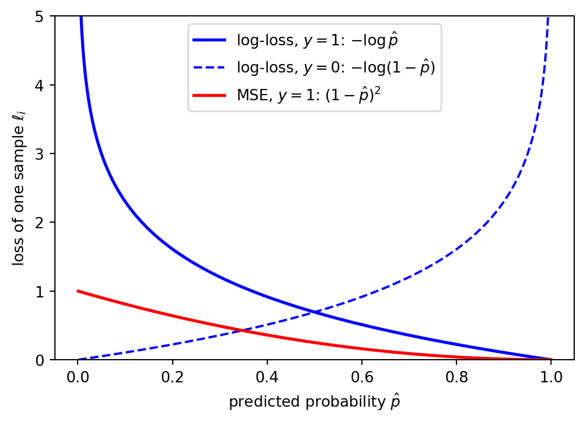
For a positive sample, the MSE of a completely wrong prediction (\(\hat p \to 0\)) is at most 1. The log-loss grows without bound: \(-\log \hat p \to \infty\) when \(\hat p \to 0\) (and symmetrically for a negative sample when \(\hat p \to 1\)). Confident mistakes are strongly penalised.
Confident but wrong
What matters for gradient descent is not the loss but its slope. For one sample with score \(z_i = b + \mathbf{w}^T\mathbf{x}_i\), using \(\sigma'(z) = \sigma(z)(1-\sigma(z))\):
\[ \frac{\partial \ell_i^{\text{log}}}{\partial z_i} = \hat p_i - y_i \qquad\qquad \frac{\partial \ell_i^{\text{MSE}}}{\partial z_i} = 2\,(\hat p_i - y_i)\;\hat p_i\,(1 - \hat p_i) \]
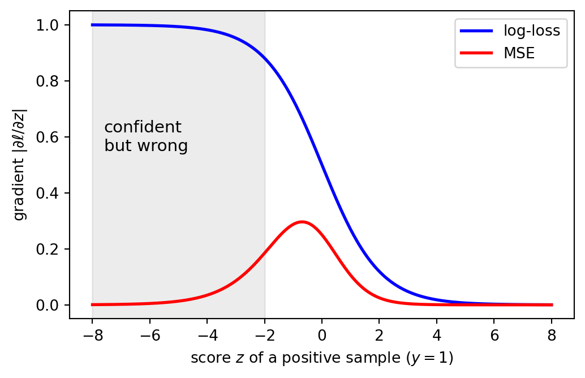
The extra factor \(\hat p_i(1-\hat p_i)\) of the MSE is the slope of the sigmoid: it goes to zero when the sigmoid saturates. A positive sample with a very negative score, confidently misclassified, gives almost no gradient with the MSE, and the model does not learn from its biggest mistakes. With the log-loss the gradient tends to 1: the more wrong the model, the stronger the correction.
Where the log-loss comes from
The log-loss follows from asking which parameters make the observed labels most probable (maximum likelihood), as the MSE does for Gaussian noise.
For each sample, the model gives the probability of each label: \(P(y_i = 1) = \hat p_i\) and \(P(y_i = 0) = 1 - \hat p_i\). The two cases can be written in a single expression, because \(y_i\) is either 0 or 1: \[ P(y_i) = \hat p_i^{\;y_i}\,(1-\hat p_i)^{1-y_i} \qquad \begin{cases} y_i = 1: & \hat p_i^{\,1}(1-\hat p_i)^{0} = \hat p_i \\ y_i = 0: & \hat p_i^{\,0}(1-\hat p_i)^{1} = 1-\hat p_i \end{cases} \]
The likelihood is the probability that the model gives to all the observed labels. For independent samples it is the product: \[ \mathcal{L}(\mathbf{w}, b) = \prod_{i=1}^n \hat p_i^{\;y_i}(1-\hat p_i)^{1-y_i} \] E.g. labels \((1, 0, 1)\) and \(\hat p = (0.9, 0.2, 0.6)\) give \(\mathcal{L} = 0.9 \times 0.8 \times 0.6 = 0.43\): a better model gives a larger \(\mathcal{L}\).
Maximising \(\mathcal{L}\) is the same as minimising \(-\frac{1}{n}\log\mathcal{L}\), and the logarithm turns the product into a sum: \[ -\frac{1}{n}\log\mathcal{L} = -\frac{1}{n}\sum_{i=1}^n \Big[ y_i \log \hat p_i + (1 - y_i)\log(1 - \hat p_i) \Big] \] which is exactly the log-loss.
Note
Extended to many classes, this is the CrossEntropyLoss used for neural networks in CW3.
The optimisation landscape
The two losses as functions of \((w, b)\), for the same 1D dataset with overlapping classes (feature standardised):
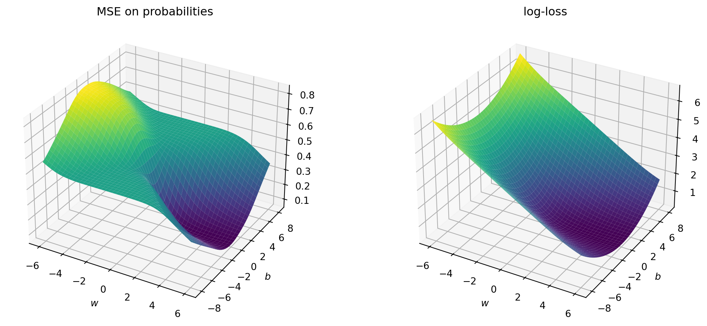
The MSE surface has a single valley but large flat plateaus (where all samples are predicted as one class) and is not convex. The log-loss is a smooth, convex bowl: from anywhere, the slope points towards the minimum.
Gradient descent on the two landscapes
The same gradient descent (same starting point, learning rate \(\eta = 1\), 100 iterations) on the two losses:
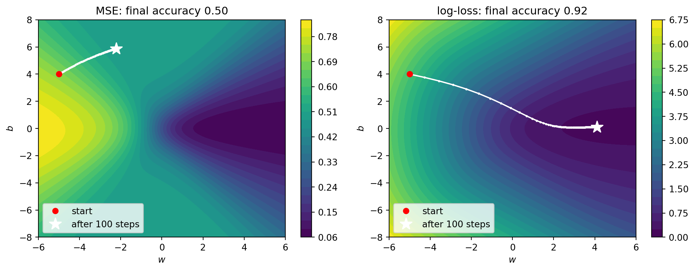
With the MSE, the descent crawls along the plateau and ends where the model still predicts almost every sample as positive. With the log-loss it reaches the minimum. Both losses have their best point in the same region: the problem of the MSE is not where the minimum is, but whether the algorithm can get there.
The algorithm
The log-loss of logistic regression is convex: there is a single global minimum, ideal for gradient descent. But, unlike linear regression, there is no closed-form solution: the minimum must be found iteratively.
The gradient has a simple analytical form. We saw that the derivative of each term of the loss with respect to the score is \(\hat p_i - y_i\); since \(\partial z_i / \partial \mathbf{w} = \mathbf{x}_i\) and \(\partial z_i / \partial b = 1\), the chain rule gives:
\[ \frac{\partial L}{\partial \mathbf{w}} = \frac{1}{n}\sum_{i=1}^{n}(\hat p_i - y_i)\,\mathbf{x}_i = \frac{1}{n}\mathbf{X}^T(\hat{\mathbf{p}} - \mathbf{y}), \qquad \frac{\partial L}{\partial b} = \frac{1}{n}\sum_{i=1}^{n}(\hat p_i - y_i) \]
Note
Compare with the MSE gradient of linear regression (2b), \(\frac{2}{n}\mathbf{X}^T(\hat{\mathbf{y}} - \mathbf{y})\): the same structure, prediction error times input. Only the prediction has changed, from \(\hat y_i\) to \(\hat p_i\).
Gradient descent from scratch
The two-feature data of the previous slides, fitted with our own gradient descent and compared with scikit-learn (with a very large C: the reason is explained at the end of the lecture).
sig = lambda z: 1 / (1 + np.exp(-z)) # sigmoid
Xs = (X2 - X2.mean(axis=0)) / X2.std(axis=0) # standardise
w, b, eta = np.zeros(2), 0.0, 0.5
history = []
for epoch in range(500):
p = sig(b + Xs @ w)
w -= eta * Xs.T @ (p - y2) / len(y2)
b -= eta * np.mean(p - y2)
p = np.clip(p, 1e-12, 1 - 1e-12)
history.append(-np.mean(y2 * np.log(p) + (1 - y2) * np.log(1 - p)))
ref = LogisticRegression(C=1e6).fit(Xs, y2) # see the note on C
print("GD : w =", w.round(2), " b =", round(b, 2))
print("sklearn: w =", ref.coef_[0].round(2), " b =", ref.intercept_.round(2))GD : w = [2.7 2.74] b = 0.09
sklearn: w = [2.73 2.76] b = [0.09]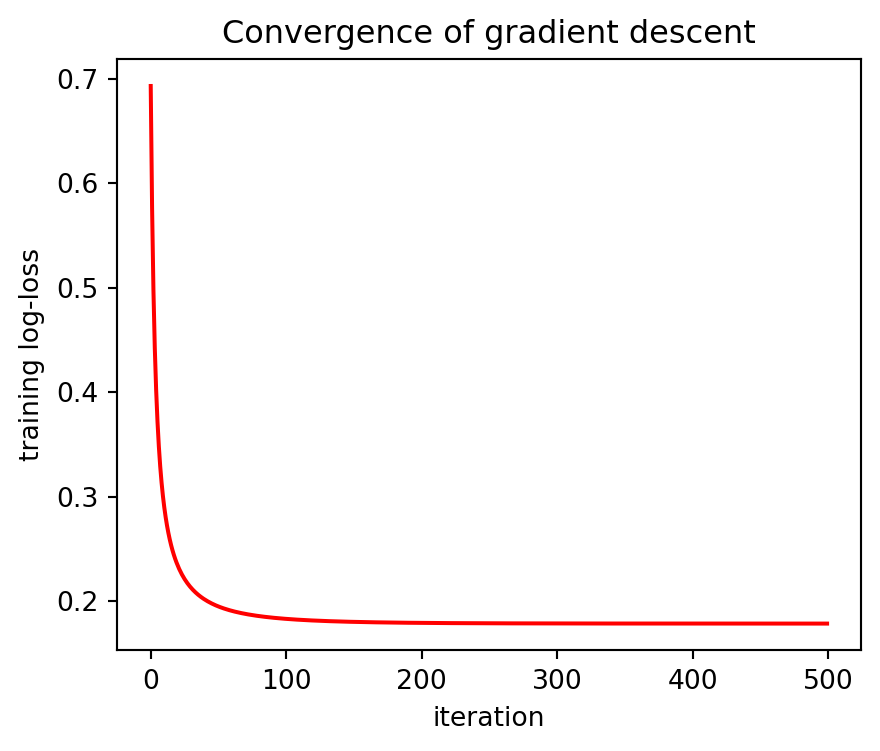
Solvers in scikit-learn
LogisticRegression does not use plain gradient descent, but more efficient iterative solvers, selected with solver:
solver |
Idea | Typical use |
|---|---|---|
"lbfgs" (default) |
quasi-Newton: uses gradients and an approximation of the curvature | small and medium datasets |
"liblinear" |
coordinate descent | small datasets |
"newton-cg", "newton-cholesky" |
Newton’s method (exact curvature) | few features, many samples |
"sag", "saga" |
stochastic average gradient | large datasets |
Every iterative solver stops when the change becomes smaller than a tolerance tol, or after max_iter iterations (default 100). If it hits max_iter first, scikit-learn raises a ConvergenceWarning: the model has not reached the minimum, and its weights (and scores) are not the ones the method promises.
Important
A ConvergenceWarning is not noise to silence. First scale the features, then, if needed, increase max_iter. The number of iterations actually used is stored in n_iter_.
Breast cancer: a classification task
The Breast Cancer Wisconsin dataset describes cell nuclei in images of fine-needle aspirates of breast masses: 30 features (mean, standard error and worst value of 10 measurements such as radius, texture, concavity), and a diagnosis, malignant or benign.
X: (569, 30)
benign (0): 357 malignant (1): 212Warning
Always check how the classes are coded. In load_breast_cancer, 0 is malignant. We relabel so that the class we want to detect is the positive class, \(y = 1\): metrics such as precision and recall (4a) depend on this choice.
Looking at the data
Two of the 30 features, coloured by diagnosis. The features are not scaled: areas are in the hundreds, concavities below one.
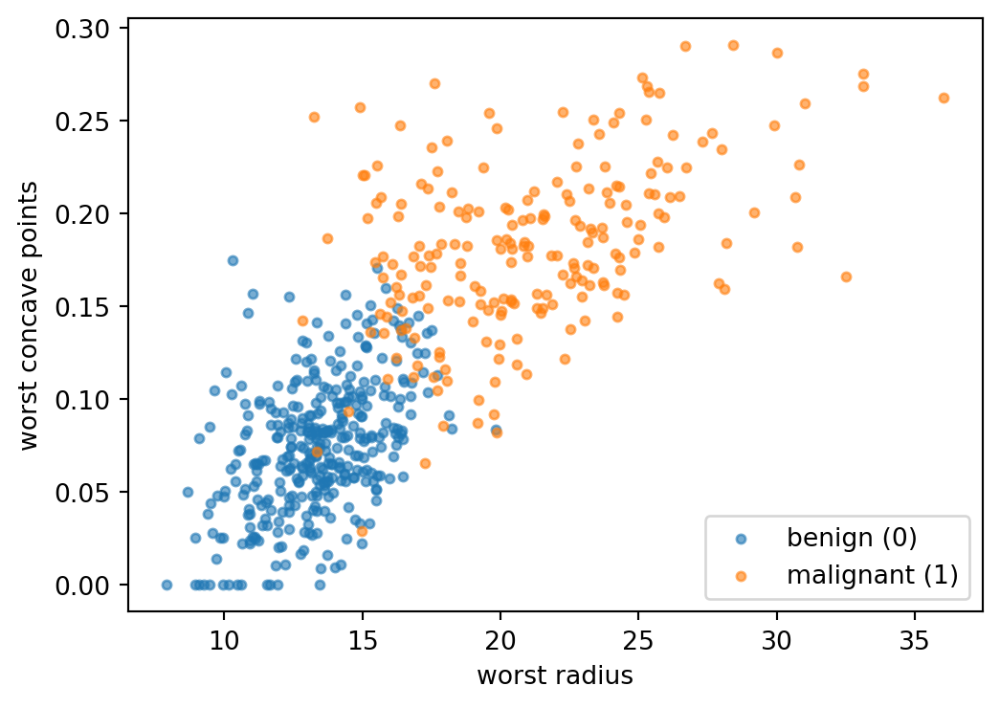
The classes are largely, but not completely, separated by a straight line: a good case for a linear classifier. The overlap region is where errors will happen.
About 63% of the samples are benign: keep this in mind when reading the accuracy.
Train, fit, predict
We split with stratification, so that training and test sets keep the class proportions (more in 4b), and put the scaler and the classifier in a pipeline (3b), so that the scaler is fitted on the training data only.
from sklearn.model_selection import train_test_split
from sklearn.pipeline import make_pipeline
from sklearn.preprocessing import StandardScaler
X_train, X_test, y_train, y_test = train_test_split(
X, y, test_size=0.25, stratify=y, random_state=0)
model = make_pipeline(StandardScaler(), LogisticRegression())
model.fit(X_train, y_train)
p_test = model.predict_proba(X_test)[:, 1] # probability of class 1
y_pred = model.predict(X_test) # class, threshold 0.5
print("p(malignant):", p_test[:6].round(3))
print("prediction :", y_pred[:6])
print("true label :", y_test[:6])p(malignant): [1. 0.016 0.026 0.009 0.248 0. ]
prediction : [1 0 0 0 0 0]
true label : [1 0 0 0 0 0]Note
predict_proba returns one column per class, in the order of classes_; predict returns the class with the highest probability, which for two classes means thresholding \(\hat p\) at 0.5.
Probabilities and threshold
fig, ax = plt.subplots(figsize=(6, 4))
bins = np.linspace(0, 1, 21)
ax.hist(p_test[y_test == 0], bins=bins, alpha=0.6, label='benign')
ax.hist(p_test[y_test == 1], bins=bins, alpha=0.6, label='malignant')
ax.axvline(0.5, color='k', linestyle='--', label='threshold 0.5')
ax.set_xlabel(r'predicted probability $\hat p$ (malignant)')
ax.set_ylabel('test samples')
_ = ax.legend()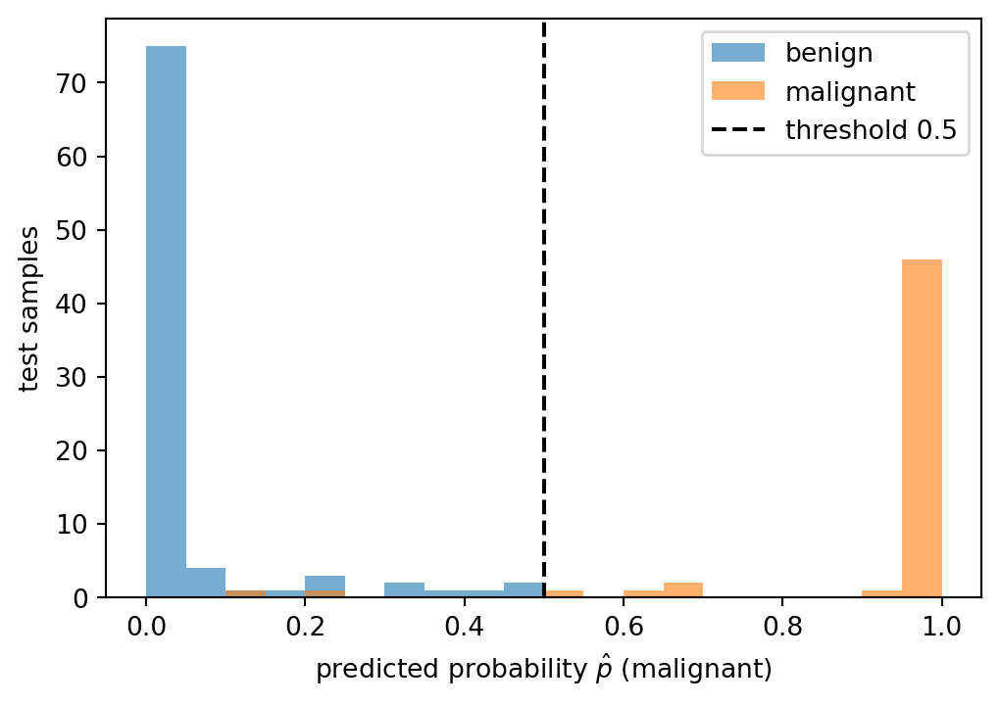
Most test samples are predicted with high confidence, close to 0 or 1. The few in the middle are the uncertain ones, and the errors hide there. The threshold 0.5 is a choice, not part of the model: in a screening test we might lower it to miss fewer malignant cases, at the price of more false alarms (4a).
Accuracy and the confusion matrix
For a classifier, each test prediction is either right or wrong. With a positive class (malignant) and a negative one (benign), there are four possible outcomes, counted in the confusion matrix:
| predicted benign (0) | predicted malignant (1) | |
|---|---|---|
| true benign (0) | TN: true negative | FP: false positive (false alarm) |
| true malignant (1) | FN: false negative (missed case) | TP: true positive |
The diagonal holds the correct predictions. The accuracy is their fraction: \[ \text{accuracy} = \frac{TN + TP}{TN + FP + FN + TP} \] It is a single number, and it hides which errors are made. In a cancer test a false negative (a missed malignancy) is far more serious than a false positive (an extra biopsy): the confusion matrix keeps the two apart. Lecture 4a builds the other classification metrics (precision, recall, …) from these four numbers.
Note
scikit-learn’s confusion_matrix uses this layout: rows are the true classes, columns the predictions, in the order of the class labels.
How good is the model?
from sklearn.metrics import accuracy_score, ConfusionMatrixDisplay
print(f"train accuracy: {accuracy_score(y_train, model.predict(X_train)):.3f}")
print(f"test accuracy : {accuracy_score(y_test, y_pred):.3f}")
print(f"always 'benign': {np.mean(y_test == 0):.3f}")
fig, ax = plt.subplots(figsize=(4.5, 4))
_ = ConfusionMatrixDisplay.from_predictions(
y_test, y_pred, display_labels=["benign", "malignant"], ax=ax, colorbar=False)train accuracy: 0.993
test accuracy : 0.986
always 'benign': 0.629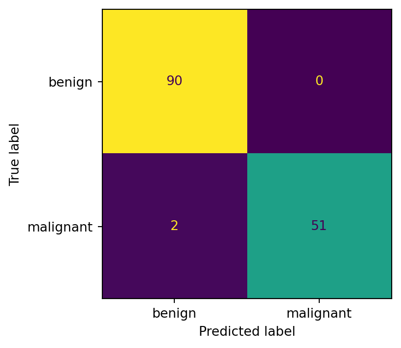
A trivial classifier that always answers “benign” already has an accuracy of 0.63, so accuracy must always be compared with this baseline. Our model does much better. The confusion matrix shows that all benign tumours are recognised (no false positives), and that the only errors are two malignant tumours predicted as benign (false negatives): the most costly kind in this application. Lowering the threshold would trade some false positives for fewer false negatives (4a).
Reading the coefficients
names = cancer.feature_names
w = model[-1].coef_[0] # last step of the pipeline
top = np.argsort(np.abs(w))[-10:] # ten largest |w_j|
fig, ax = plt.subplots(figsize=(6, 4.5))
ax.barh(names[top], w[top])
ax.axvline(0, color='k', linewidth=0.8)
ax.set_xlabel(r'weight $w_j$ (per standard deviation)')
plt.tight_layout()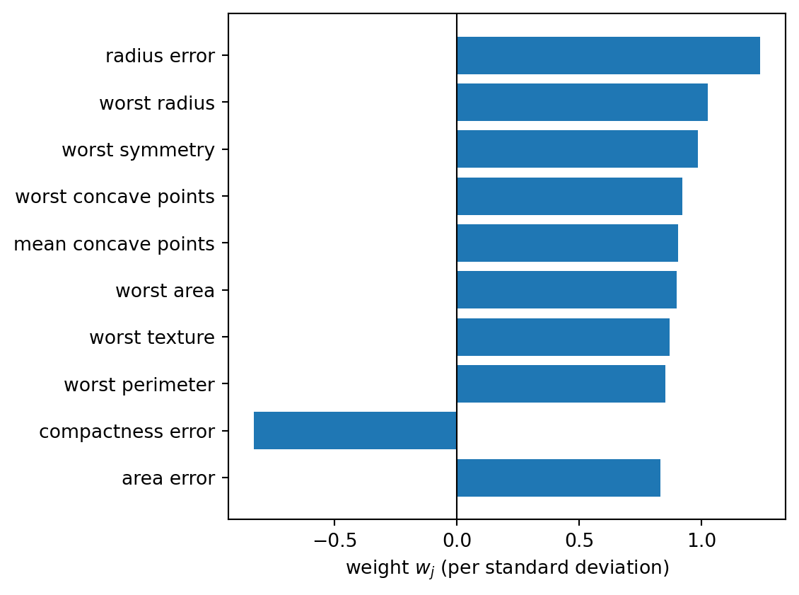
Features are standardised, so each \(w_j\) is the change of the log-odds of malignancy for one standard deviation of \(x_j\): worst radius has \(w_j \approx 1\), so one standard deviation more multiplies the odds by about \(e^1 \approx 2.7\). But radius, perimeter and area measure almost the same thing, and they share the weight among them; some weights even take an unexpected sign. Correlated features make individual weights hard to interpret (multicollinearity, 5a): read them as a group, and check them against the correlations.
Scaling and convergence
The same model, fitted on the unscaled features:
import time, warnings
from sklearn.exceptions import ConvergenceWarning
for name, est in [("unscaled", LogisticRegression()),
("scaled ", make_pipeline(StandardScaler(), LogisticRegression()))]:
with warnings.catch_warnings(record=True) as caught:
warnings.simplefilter("always", ConvergenceWarning)
t0 = time.perf_counter()
est.fit(X_train, y_train)
dt = time.perf_counter() - t0
n_it = est[-1].n_iter_[0] if name.startswith("scaled") else est.n_iter_[0]
print(f"{name}: iterations = {n_it:3d} time = {1e3 * dt:5.1f} ms "
f"warning = {len(caught) > 0} test accuracy = {est.score(X_test, y_test):.3f}")unscaled: iterations = 100 time = 16.8 ms warning = True test accuracy = 0.958
scaled : iterations = 17 time = 4.1 ms warning = False test accuracy = 0.986Without scaling, the solver stops at max_iter before converging, and the model is worse. With scaling, it converges in a few iterations. The number of iterations, and hence the training time, depends on the conditioning of the problem, not only on its size: part of the computational efficiency of a model is in the pre-processing.
One more setting: C
scikit-learn’s LogisticRegression has a setting C (default 1.0) that you will meet in every example and tutorial. In one sentence: it limits how large the weights can become. Smaller C means smaller weights and a simpler model; larger C lets the weights grow freely.
Cis not learned from the data: it is a hyperparameter, chosen before training, like the learning rate of gradient descent (2b).- For now, keep the default. In 4b we will choose
Cby comparing models on validation data; in 5a we will see why limiting the weights can improve predictions on new data (regularisation). - This is also why the gradient descent comparison above used a very large
C: it makes scikit-learn fit the plain log-loss, like our code.
Warning
Older code and textbooks set penalty="l2" (or "l1", None) in LogisticRegression. In scikit-learn 1.8 this argument is deprecated and raises a warning: its role is taken by l1_ratio and C, which we will discuss in 5a.
More than two classes
For \(c > 2\) classes, logistic regression computes one score per class, \(z_k = b_k + \mathbf{w}_k^T\mathbf{x}\), and turns the scores into probabilities with the softmax function:
\[ \hat p_k = \frac{e^{z_k}}{\sum_{l=1}^{c} e^{z_l}}, \qquad \sum_{k=1}^c \hat p_k = 1 \]
and predicts the class with the highest probability. This multinomial logistic regression is what scikit-learn does automatically when y has more than two classes (the iris example of 2a). The alternative, one-vs-rest (one binary classifier per class), is available with OneVsRestClassifier.
weights shape: (3, 4)
probabilities: [[0.985 0.015 0. ]]Logistic regression as (H, L, A)
| Linear regression (2b) | Logistic regression | |
|---|---|---|
| Task | regression, \(y \in \mathbb{R}\) | classification, \(y \in \{0, 1\}\) |
| Model \(H\) | \(\hat y = b + \mathbf{w}^T\mathbf{x}\) | \(\hat p = \sigma(b + \mathbf{w}^T\mathbf{x})\) |
| Strategy \(L\) | mean squared error | log-loss (maximum likelihood) |
| Algorithm \(A\) | normal equations or gradient descent | iterative solvers |
| Weight \(w_j\) | change of \(\hat y\) per unit of \(x_j\) | change of log-odds; \(e^{w_j}\) = odds ratio |
| scikit-learn | LinearRegression |
LogisticRegression |
Despite its name, logistic regression is a classifier: “regression” refers to the linear model of the log-odds.
What to look for
When you fit a logistic regression, check:
- which class is coded as positive (1), and how the accuracy compares with the majority-class baseline
- that the solver converged (no
ConvergenceWarning; features scaled) - the predicted probabilities, not only the labels: where are the uncertain samples?
- the confusion matrix: which errors does the model make, and which matter most for the problem?
- the coefficients on standardised features: are the most important features plausible? Are correlated features splitting the weight?
- the value of
C: the default is a starting point, not a result (tuning in 4b)
Suggested readings and activities
Suggested readings:
- Logistic regression and its probabilistic interpretation are discussed in Principles of Machine Learning and in Machine Learning for Engineers.
- The scikit-learn user guide section on logistic regression describes the solvers and the settings of
LogisticRegression.
Suggested activities:
- Go through the Logistic regression and Classification chapters of the Google crash course.
- Repeat the breast cancer example with only the two features of the scatter plot, and draw the decision boundary as in the two-blob example.
- Change the threshold from 0.5 to 0.3 (compare
p_testwith the new threshold): how does the confusion matrix change? - Fit the model without scaling, increasing
max_iteruntil the warning disappears: how many iterations are needed, and how long does it take?
Assignment: CW1
If your CW1 dataset has a categorical target, logistic regression is your model. Today’s concepts that the coursework expects you to use and interpret:
- which class is positive, and a baseline to compare with
- predicted probabilities, the decision threshold, the confusion matrix
- convergence of the solver and its cost, before and after scaling
- coefficients on standardised features, read as odds ratios
Tip
The complete pipeline (pre-processing in 3b, metrics in 4a, validation and tuning of C in 4b) is built step by step in the tutorials. Deadlines, submission instructions and the marking rubric are on Moodle.

ENG4200 AI4